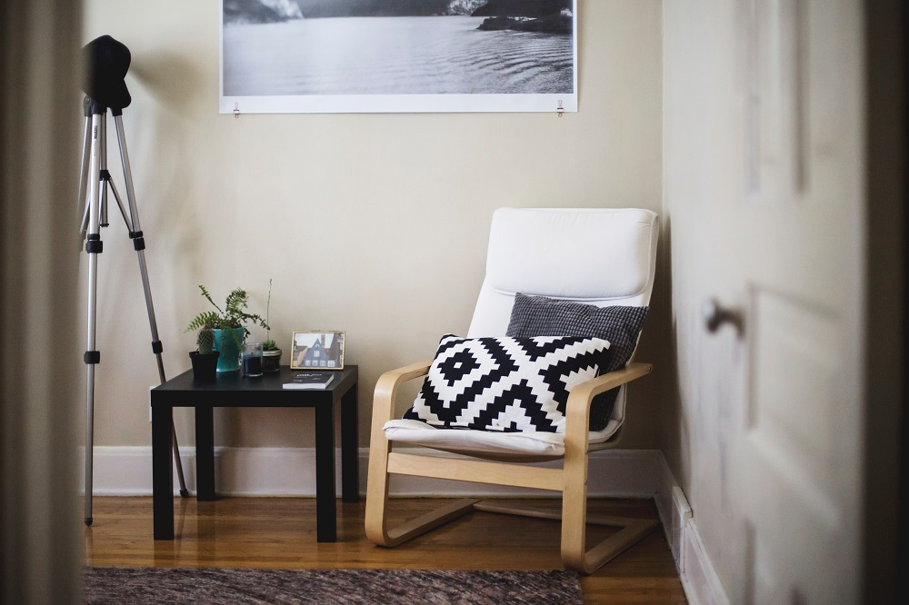

IKEA
Rite of Passage

Room decorated with IKEA furniture. (Photo by Kari Shea on Unsplash)
Whether it's going away to college or moving into your first home, chances are this major life event involved at least one trip to IKEA. The Swedish chain's furniture and home accessories have become ubiquitous around the world for those seeking affordable, multi-purpose and minimalist designs.
Overview
- Founded in 1943 by Ingvar Kamprad as a mail-order business.
- In 1958, the first store was opened under the name Möbel-IKÉA in Älmhult, Sweden
- The first store to open outside of Sweden was in Norway in 1963.
- Today, IKEA operates hundreds of stores in over 50 countries.
Further background information can be found on IKEA's Wikipedia page.